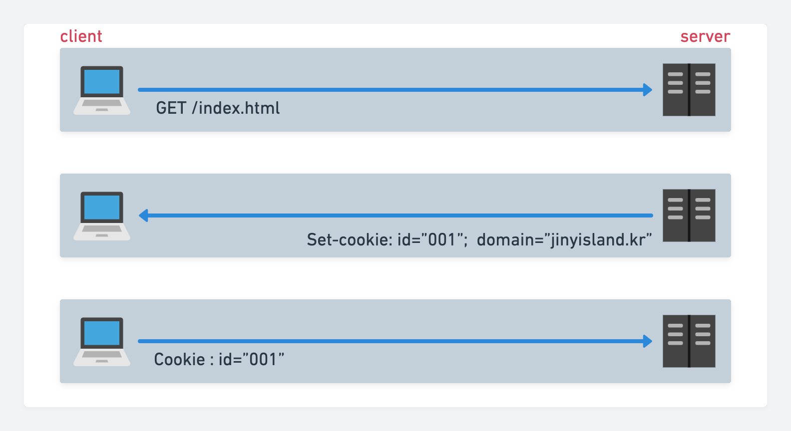

Http
http 트랜잭션에는 상태가 없다. 모든 사용자 요청에는 사이트 기능에 맞는 상태들을 유지하는데 (사용자 정보, 권한 등등..) 이런 무수히 많은 상태들을 관리하려면 사용자를 식별할 수 있는 방법이 필요하다. 그중에 하나가 쿠키이다. 물론 사용자를 가릴 수 있는 방법에 초창기 여러 가지 방법이 있었는데 사용자 IP를 활용한 방법 등이 있었다. IP를 활용한 방법에는 다음과 같은 문제점이 있다.
- 사용자 기준이 아닌 접속 PC의 IP이기 때문에 정확한 사용자 구별이 어려움
- ISP가 제공하는 IP 대역을 사용하는 경우, 대부분 매번 다른 주소를 받으므로 추후 식별이 어려움
- NAT 장비 등, 보안을 위해 IP 주소를 private 하게 관리 → 서버에서 받는 사용자 IP가 실제 IP가 아닐 수 있음
위와 같은 문제점으로, IP를 활용한 방식보다 아예 사용자 마다의 인증 프로세스를 부여하여 명확한 식별 요청을 할 수 있는데 이 기능이 바로 우리가 흔히 접하는 로그인 기능
Cookie
쿠키는 사용자를 식별하고 세션을 유지시키는 방식 중에서 널리 사용되고 있는 방식이다. 유효 기간이 있으며 key와 value으로 이루어져 있다.
동작방식

사용자가 처음 웹 사이트에 방문하면 서버는 사용자가 어떤 사용자인지 전혀 알지 못한다. 해당 사용자가 다시 웹 사이트에 방문할 때 해당 사용자가 어떤 사용자인지 식별하기 위해 서버에서는 응답 헤더에 쿠키 값을 할당한다. 형식은 다음과 같다.
Cookie: userName="jiny"; auth="1"
이제 브라우저(클라이언트)에서는 응답 헤더에서 쿠키 컨텐츠를 브라우저 쿠키 데이터베이스에 저장시킨다. 이는 Chrome 기준이며 각 브라우저별로 쿠키 보관 방식이 다르다.
-
chrome : sqlite local DB에 Cookies라는 테이블에 쿠키 정보 저장
해당 테이블은 아래 필드로 이루어져 있다.
- host_key : 쿠키 도메인
- name : 쿠키 이름
- value : 쿠키 값
- path : 쿠키 도메인 경로
- expire_utc : 만료 시점 (UTC 기준 초 단위)
-
Internet Explorer : 캐시 디렉토리에 개별 파일로 쿠키 저장
세션 쿠키와 지속 쿠키
세션 쿠키는 사용자가 브라우저를 닫으면 삭제되며, 지속 쿠키는 사용자 PC 드라이브에 저장되어 재시작해도 살아있다.
(Discard 파라미터 또는 만료시간 등이 설정되지 않은 쿠키는 기본적으로 세션 쿠키로 설정된다.)
Cookie 주고받기
node.js를 사용한 간단한 쿠키 주고받는 소스이다.
singup이라는 POST 요청이 들어오면, 클라이언트에서 전송한 사용자 ID를 바로 쿠키에 set 해서 응답한다. 브라우저에서는 해당 쿠키를 저장하고 다음 요청부터는 Request Headers에 쿠키를 삽입해서 서버로 전송한다. 주의할 점은 한글 문자열을 사용할 때 encodeURIComponent와 decodeURIComponent로 변환 해주는 과정이 필요하다.
SetCookie
|
|
getCookie
이제 클라이언트에서 쿠키를 포함한 요청을 보내면 서버 측에서도 쿠키를 식별해야 한다.
아쉽게도 node.js에서는 쿠키 값을 빼내올 함수가 따로 존재하지 않는다. request.headers.cookie에 쿠키 정보는 확인할 수 있지만 원하는 쿠키 값을 찾으려면 직접 함수로 구현해야 한다. 여러 책이나 자료에서도 찾을 수 있지만, 한번 cookie 구조 파악 겸 직접 작성해 보았다.😅
|
|
해당 함수를 바탕으로 원하는 쿠키 값이 있는지 확인할 수 있다.
|
|
여러옵션
Expire
유효기간을 설정해야 지속 쿠키로 사용할 수 있다. Expires키로 설정할 수 있고 GMTString 형태로 변환해 전송해야 한다.
만약 초를 입력하려면 Max-age=3000형태로 Max-age키를 사용해야 한다.
|
|
HttpOnly
스크립트로 접근할 수 없음, 로그인 등 보안이 필요한 요청에 필수적으로 사용 권장하며 조작을 방지할 수 있다.
|
|
Path
해당 경로 이하 도메인에 쿠키 사용, 예를들어 Path = /user라면, /user 하위의 도메인에만 쿠키를 사용한다. (root 도메인에선 쿠키 사용 안함)
|
|
Domain
쿠키가 전송될 도메인을 지정한다. (default 값은 현재 도메인)
Secure
HTTPS일 경우에만 쿠키가 전송된다.
정리
이렇게 쿠키에 대해서 정리를 해보았다. 쿠키는 용도가 명확하다, 어떤 사용자인지 쉽게 식별할 수 있고 도메인 내에서 쿠키 권한을 각각 다르게 함으로써 분기 처리도 쉽게 할 수 있다.
만약 로그인 기능을 구현한다면 로그인했을 때 해당 사용자가 어떠한 권한이 있는지, 해당 사용자의 로그인 기간은 얼마나 줄 것인지 이렇게 사용자 식별을 위해 도입된 로그인 기능을 좀 더 세밀하게 사용할 수 있다. 물론 브라우저와 디스크에 저장되기 때문에 예민한 정보들은 사용자가 알아볼 수 없도록 내부 키값을 따로 지정해 사용하는 등 여러 고민들도 해봐야 할 것 같다.
참고 자료
- HTTP 완벽 가이드 - 클라이언트 식별과 쿠키
- Node.js 교과서 - 쿠키와 세션 이해하기 (조현영 저)